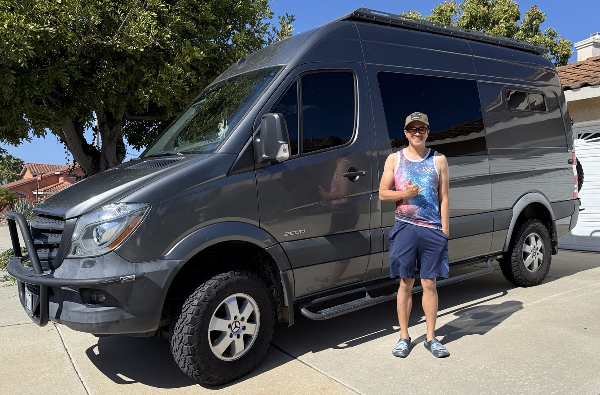

DECODED TELEMETRY
OBD-II Mode 01 — appears as each PID first responds. Enable polling to populate.
No decoded PIDs yet. Decoded values come from OBD polling —
flip Poll PIDs on (while parked) to request them.
| ID | DLC | DATA | Hz | COUNT | AGE |
|---|
COVESA-inspired signal domains with Sprinter service-system overlays.

Engine operating state and thermal health.
Status reflects observed OBD signals and simple range checks—not a complete manufacturer diagnosis. Systems without supported signals remain “No data.”